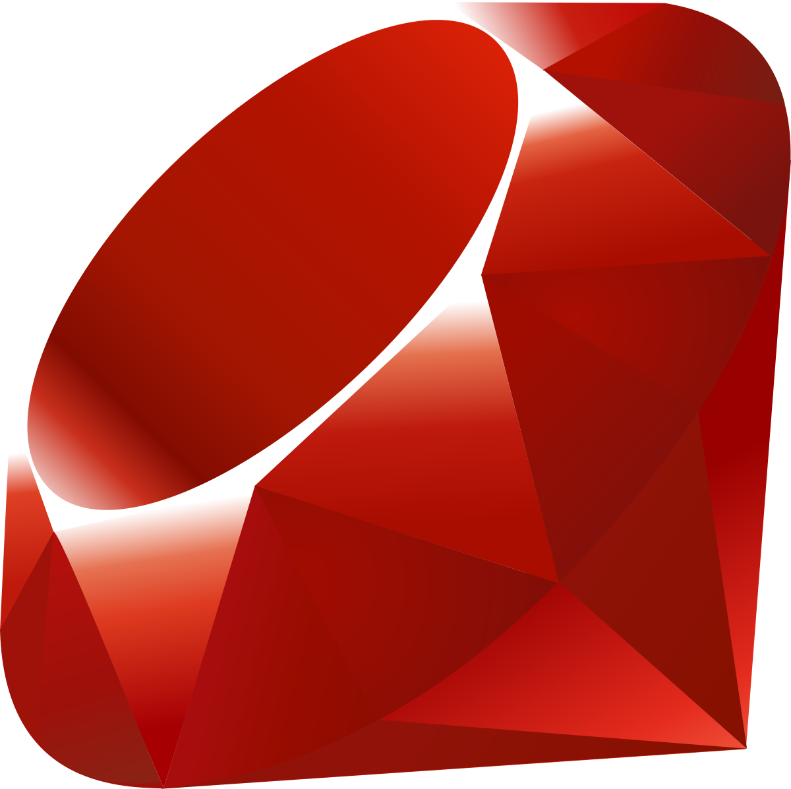

Ruby:

Uma linguagem de progamação interpretada e de alto nível, afinal ela é conhecida por ser dinâmica, objetiva e focada em simplicidade e produtividade, afinal ela consegue fazer coisas como:
Desenvolvimento web, Automação, API's, Desenvolvimento desktop e até prototipagem rápida, muito usada em startups ou empresas pequenas e até desenvolvimento web completo e claro automação de tarefas
administrativas e DevOps.